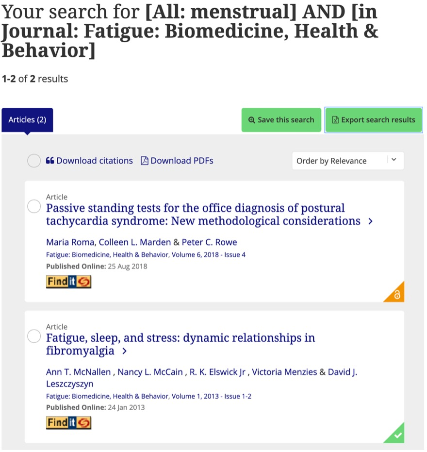
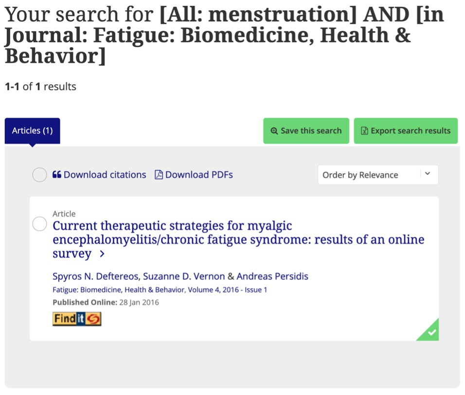
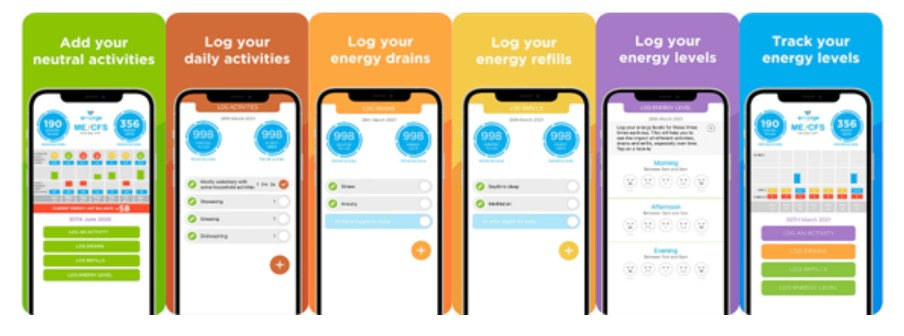

ME & My Period is aimed at filling the gap in healthcare for people who have Myalgic Encephalomyelitis (ME) and a menstrual cycle. The purpose it be able to track the severity of ME symptom display according to the point in the menstrual cycle, allowing forward planning for activities in harmony with the menstrual changes.
Myalgic Encephalomyelitis
ME, or Chronic Fatigue Syndrome (CFS), is a complex and at times debilitating disease (Friedberg, 2020; Institute of Medicine, 2015; What is ME/CFS?, 2021). There is minimal research completed and no empirical test for diagnosis (Jason et al., 2013). The evolving nature of the disease means that activity that is possible one day may be unachievable the next (What is ME/CFS?, 2021).
Approximately 1% of the population is affected by CFS/ME, with 75-80% being women (Friedberg, 2020; Institute of Medicine, 2015; What is ME/CFS?, 2021), of these women 53% reported that monthly menstrual cycles negatively impacted their illness (Chu, Valencia, Garvert and Montoya, 2019). Despite this representing approximately 40% of the ME/CFS population there are minimal tools in aiding this aspect of the disease. In the Fatigue: Biomedicine, Health & Behaviour Journal published by the International Association for Chronic Fatigue Syndrome/Myalgic Encephalomyelitis there wasn’t a single article on the association between ME/CFS and the menstrual cycle, as shown in Figure 1 and Figure 2.
Figure 1: Search results from the Fatigue: Biomedicine, Health & Behaviour Journal for ‘Menstrual’
Figure 2: Search results from the Fatigue: Biomedicine, Health & Behaviour Journal for ‘Menstruation’
The most common techniques utilised for ME/CFS management include the PACE method, rests and symptom management (Friedberg, 2020; Institute of Medicine, 2015; Jason et al., 2013; What is ME/CFS?, 2021). There is currently minimal software available in the aid of this disease and only one promoted by Emerge Australia, the advocacy organisation for ME/CFS in Australia (ME/CFS Pacing App, 2021). Yet ME/CFS Pacing doesn’t include a function to track against the menstrual cycle, shown in Figure 3. In juxtaposition applications that allow you to track menstrual cycle, such as Fitbit and Flo Menstrual Period Calendar, don’t have a function to correlate available energy (Flo - ovulation calendar, period tracker, and pregnancy app, 2021; How do I use the Fitbit app to track my period?, 2021).
Figure 3: Features of the ME/CFS Pacing App (Blake, 2021)
ME & My Period
Phase One
The first iteration of ME & My Period will be basic and have the ability to input data on how the user is feeling regarding symptom display their menstruation dates with the option of inputting the results of ovulation tests and daily basal body temperature for increased accuracy. The scaling system for how they are feeling will be a score out of 10 with only whole number options.
The purpose of the basal body temperature and ovulation tests is to have empirical data to pinpoint when ovulation is (What is the Temperature Method | Basal Body Temperature, 2021). Thus, allowing hormone levels and menstrual phases to be interpolated and correlated with energy levels/symptom display. The longer that the software is used the more accurate the trendline and predications will be. It can be expected that the function will resemble a sine/cosine graph.
Phase Two
The second phase of ME & My Period would be to incorporate specific tasks, similar to the ME/CFS Pacing app, to each day to allow more in-depth analysis of the data. This would allow the user to see how much the activity will cost in each stage of the cycle and make informed decisions. This could be when to complete certain types of physical activity, when the best time is to undertake mentally taxing tasks or when it is the best time to partake in social situations. Sleep data through a questionnaire would be included but would have drawbacks due to not being empirically backed.
Phase Three
The third phase is to expand upon how the user is feeling and the option to create sections and corresponding categories for each of their symptom displays (an expansion of the single symptom display score in phase one) An example would be the category of mental health and the sections include depression symptoms, feelings of anxiety, self-doubt and panic attacks. Concurrently a feature would be incorporated to allow the specified tasks to have scores placed against each of the sectioned symptoms.
To have this feature add exceptionally user value machine learning would be required so that a large amount of data analysis could be completed to draw conclusions that would be unachievable, or identifiable, by healthcare professionals.
Phase Four
Phase four is the incorporation of dietary intake, not for the purpose of calorie counting but to help identify intake that cause adverse reaction, including specific symptoms, the intake may have no reaction on energy levels but cause another symptom to increase.
Dietary intake includes anything consumed, this includes food and drinks, medication, supplements, medication and self-prescribed drug use and anything topical that is applied to the skin.
Phase Five
The final phase of pure app development would be the creation of a wearable (would have its’ own design and development timeline) to support the app features to improve the user experience. The wearable would track basal body temperature (menstrual cycle tracking), heart rate (empirical exertion data) and sleep data. There is also the potential of including other aspects that are included in products such as the Fitbit but would need to be further investigated to see if it would be relevant for the targeted client base.
At this point there is the option to share the data to researchers to allow greater insights on what works or is unsuccessful. It may not be useful for double blind studies but could be used to identify key research areas.
ME & My Period Software Development
The initial app would be developed using the MIT App Inventor, once machine learning and large data analysis was needed other avenues would need to be explored to complete the data analysis.
To ensure the success of the app many different skills are going to be needed. To have the best experience a software engineer or software developer, a project manager, a user interface/user experience professional, stakeholder engagement officer and a consulting ME/CFS specialist to ensure that the app is performing in accordance with latest research.
The skills are fairly common other than the ME/CFS specialist; thus, it would be important to engage a specialist early on. A way to mitigate the risk of not having specialist input would be to reach out to advocacy groups early on and use networking.
ME & My Period Achievements
The success of ME & My Period would mean that women would have a more holistic way to track, review and manage the symptoms of their ME/CFS, filling a gap in the market. It would have the added benefit of supporting the research and knowledge of ME/CFS to help develop treatments and a cure.